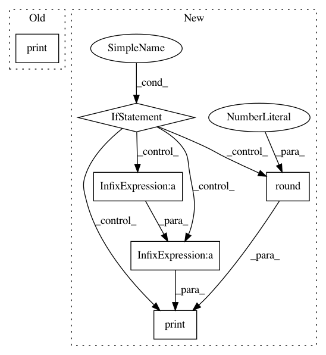

df24b86d68db0a0f4f6947b806e7a0facc47c2b8,pymc3/variational/advi.py,,run_adagrad,#Any#Any#Any#Any#Any#Any#Any#,213
Before Change
print("Iteration {0} [{1}%]: ELBO = {2}".format(i, 100*i//n, e.round(2)))
if verbose:
print("Finished [100%]: ELBO = {}".format(elbos[-1].round(2)))
return uw_i, elbos
def variational_gradient_estimate(
vars, model, minibatch_RVs=[], minibatch_tensors=[], total_size=None,
After Change
uw_i, g, e = f()
elbos[i] = e
if verbose and not i % (n//10):
if not i:
print("Iteration {0} [{1}%]: ELBO = {2}".format(i, 100*i//n, e.round(2)))
else:
avg_elbo = elbos[i-n//10:i].mean()
print("Iteration {0} [{1}%]: Average ELBO = {2}".format(i, 100*i//n, avg_elbo.round(2)))
if verbose:
avg_elbo = elbos[-n//10:].mean()
print("Finished [100%]: Average ELBO = {}".format(avg_elbo.round(2)))
return uw_i, elbos
In pattern: SUPERPATTERN
Frequency: 3
Non-data size: 6
Instances
Project Name: pymc-devs/pymc3
Commit Name: df24b86d68db0a0f4f6947b806e7a0facc47c2b8
Time: 2016-06-05
Author: chris.fonnesbeck@vanderbilt.edu
File Name: pymc3/variational/advi.py
Class Name:
Method Name: run_adagrad
Project Name: flow-project/flow
Commit Name: a4cd451b3ce3da6ae5a4d7a2ab18237b278c4dd3
Time: 2017-04-27
Author: nishantkheterpal@gmail.com
File Name: cistar-dev/cistar/core/base_env.py
Class Name: SumoEnvironment
Method Name: step
Project Name: pymc-devs/pymc3
Commit Name: df24b86d68db0a0f4f6947b806e7a0facc47c2b8
Time: 2016-06-05
Author: chris.fonnesbeck@vanderbilt.edu
File Name: pymc3/variational/advi.py
Class Name:
Method Name: advi_minibatch